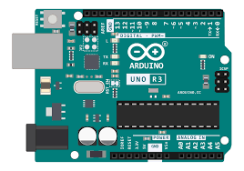
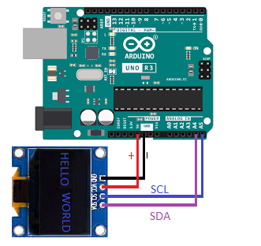
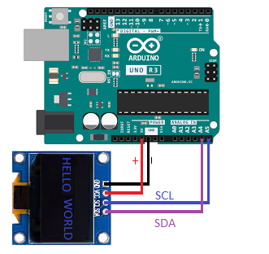

Click the pin on the image to see details here.
Welcome
This website is a visual Arduino guide designed to help you understand both hardware and code at the same time. Instead of reading long manuals, you learn by clicking, exploring, and seeing how things connect.
The guide focuses on clarity, speed, and simplicity. Everything is contained in a single fast-loading website that works offline and runs even on older computers.
What You Will Learn
- What each Arduino pin does and when to use it
- How code controls real electronic components
- How to connect LEDs, buttons, sensors, motors, and screens
- How Arduino communicates using Serial, I²C, and SPI
How This Guide Works
The guide is built around visual interaction. You can click on pins, open examples, and read explanations next to the hardware they belong to.
- Click pins on the board to see what they do
- Select pin groups to highlight related pins
- Open code examples with line-by-line explanations
- See wiring diagrams drawn in MS Paint style
Who This Guide Is For
- Beginners learning Arduino for the first time
- People who prefer visual learning over long text
- Students, hobbyists, and self-taught makers
- Anyone who wants a fast, offline Arduino reference
Why This Guide Is Different
Most Arduino tutorials explain code or hardware separately. This guide shows both together, so you understand why something works, not just how.
No frameworks. No heavy scripts. No clutter. Just clear explanations and practical examples.
Use the menu to explore the board, pins, examples, and wiring diagrams. Start anywhere and learn at your own pace.
Arduino Board
The Arduino Uno is a beginner-friendly microcontroller board designed to interact with the physical world. It can read sensors, control outputs, and run the same program continuously without an operating system.
At its core is the ATmega328P microcontroller. Unlike a PC CPU, this chip runs a single sketch (program) in a loop and directly controls hardware pins.
Memory Overview
- Flash: 32 KB – Stores your program (sketch)
- SRAM: 2 KB – Used while the program is running (variables)
- EEPROM: 1 KB – Stores data even when power is off
Because memory is limited, efficient code and simple data structures are important when working with Arduino.
Clock & Speed
- Clock speed: 16 MHz
- 1 instruction roughly every 62.5 ns
- No multitasking or background processes
The fixed clock speed makes timing predictable, which is ideal for electronics, motors, and communication protocols.
Power & Connectivity
- Powered via USB or external supply (7–12V)
- Onboard voltage regulator
- USB-to-Serial interface for programming
Once programmed, the Arduino can run standalone without a computer.
What the Board Is Good At
- Reading sensors (temperature, light, distance)
- Controlling LEDs, relays, motors, and screens
- Talking to other devices (I²C, SPI, UART)
- Running simple logic reliably for years
The Arduino board acts as the bridge between software and real-world electronics.
Arduino Board – Hardware & Components
This section explains the physical parts of an Arduino board and how real components connect to it. All diagrams can be drawn in MS Paint and matched to real wiring.
Microcontroller (The Brain)
The microcontroller is the main chip on the Arduino. On the Arduino Uno, it is the ATmega328P.
- Executes your program line by line
- Reads inputs from pins
- Controls outputs like LEDs and motors

Power System
The Arduino can be powered in multiple ways:
- USB – 5V from computer
- VIN – 7–12V external supply
- 5V pin – regulated output (limited current)
- GND – ground (must always be connected)
Important: Never power motors directly from Arduino 5V.
Digital Pins (0–13)
Digital pins can be either ON (HIGH) or OFF (LOW). Code on the Examples page Visit us LED example.
- Used for buttons, LEDs, relays
- Pins with ~ support PWM
- Pin 13 has a built-in LED
Analog Pins (A0–A5)
Analog pins read voltage levels, not just ON/OFF.
- Range: 0–5V
- Values: 0–1023
- A4 = SDA, A5 = SCL (I²C)
Resistors
Resistors limit current and protect components.
- Used with LEDs
- Typical values: 220Ω, 330Ω, 1kΩ, 10kΩ
- Direction does NOT matter
- Connect it on the positive end of a component
Capacitors
Capacitors smooth voltage and reduce noise.
- Ceramic: no polarity
- Electrolytic: + and − matters
- Electrolytic: connected wrong may damage the component
- Used near motors and power

Motors (DC & Servo)
Motors draw high current and must NOT be connected directly to pins.
- Use motor driver or transistor
- External battery required
- Common GND with Arduino
Sensors
Sensors convert physical values into electrical signals.
- Distance sensors
- Temperature sensors
- Light sensors
Arduino Board Hardware and Components Visual
Arduino boards are built around a microcontroller and include power regulation, communication pins, and headers for expansion.
Core Parts
- Microcontroller (ATmega328P)
- USB interface
- Voltage regulator
- Pin headers
Components connect directly to these pins using jumper wires or breadboards.
Screen (I²C)
OLED / LCD using SDA and SCL.
 

DC Motor
Motor driver required.

Stepper Motor
Two-stage wiring.

Arduino Uno Board Image
Arduino Explained
Arduino is an open-source electronics platform based on easy-to-use hardware and software. It is used to read sensors, control motors, displays, lights, and communicate with other devices.
🧠 What is Arduino?
An Arduino board is a small computer called a microcontroller. Unlike a PC or laptop, it does not run an operating system. Instead, it runs one program over and over again and directly controls electronic components connected to it.
Arduino is designed to interact with the real world. It can sense its environment, make decisions, and react instantly without needing a keyboard, mouse, or screen.
- Reads inputs – buttons, sensors, joysticks, distance sensors
- Processes logic – your code decides what should happen
- Controls outputs – LEDs, motors, buzzers, relays, displays
This makes Arduino ideal for learning electronics, building projects, automating tasks, and creating interactive devices.
🧩 Main Components on the Board:
- Microcontroller (ATmega328P) – the brain
- USB Port – programming + power
- Voltage Regulator – keeps voltage safe
- Crystal Oscillator – timing (16 MHz)
- Capacitors – smooth power (+ / − matters)
- Resistors – limit current
📍 Pin Layout
Arduino Uno pins are grouped by function:
Digital Pins (0–13)
- Read HIGH / LOW
- Some support PWM (~)
- Pin 0 & 1 are used for USB serial
Analog Pins (A0–A5)
- Read voltage (0–5V)
- Mapped to values 0–1023
- A4 = SDA, A5 = SCL (I²C)
Power Pins
- 5V – regulated output
- 3.3V – low power devices
- GND – ground
- VIN – external power input
🔌 Communication Methods
-
UART (Serial) – Pins 0 (RX) & 1 (TX)
Used for uploading code, debugging, and talking to PCs or Bluetooth modules. -
I²C – SDA & SCL (2 wires, shared bus)
Connect many devices like OLEDs, sensors, RTCs using addresses. -
SPI – SS, MOSI, MISO, SCK
Very fast communication for displays, SD cards, memory chips.
Tip: I²C is easiest for beginners, SPI is fastest.
💾 Memory Inside Arduino
-
Flash (32 KB) – Stores your program
Code stays even when power is off. -
SRAM (2 KB) – Working memory
Variables, arrays, and calculations while running. -
EEPROM (1 KB) – Long-term storage
Save settings, scores, or calibration data.
Warning: Running out of SRAM causes crashes.
⚡ Powering Arduino
- USB (5V) – Easiest and safest for beginners
- VIN (7–12V) – External power supply or battery
- 5V Pin – Direct regulated power (advanced users)
Never exceed voltage limits.
Motors and high-power devices need separate power.
💻 Software & Downloads
-
Arduino IDE – Official graphical programming tool
Easy to use, recommended for beginners. -
Arduino CLI – Command Line Interface (CMD / Terminal)
Advanced, scriptable, fast, and very powerful. - Works on Windows, Linux, macOS
- Uses a C / C++ style language compiled before upload
- Libraries add support for displays, sensors, motors, storage
-
Commands:
compile: arduino-cli.exe compile --fqbn arduino:avr:uno --libraries libraries blink
upload: arduino-cli.exe upload -p COM8 --fqbn arduino:avr:uno blink
Official Downloads:
- 🧰 Arduino IDE: arduino.cc/en/software
- ⌨️ Arduino CLI: arduino-cli documentation
Why Arduino CLI / CMD is rarely mentioned:
- Arduino focuses on beginners and education
- CLI requires understanding paths, boards, and toolchains
- No visual editor or built-in serial monitor by default
- Can be confusing without prior programming experience
However: Using Arduino from CMD is not wrong. It is actually more professional and commonly used in:
- Automation and scripting
- Build systems and CI pipelines
- Minimal systems (no GUI)
- Advanced or custom workflows
Code is compiled and uploaded via USB, then runs automatically when powered.
Tip: The Arduino IDE internally uses the same tools as Arduino CLI.
🛠️ What Can You Build?
- Robots and drones
- RC cars and controllers
- Mini games and consoles
- Smart home systems
- Security alarms
- Learning computers
- Data loggers and monitors
⚠️ Common Beginner Mistakes
- Connecting motors directly to Arduino pins
- Forgetting to connect GND
- Overloading the 5V pin
- Using pins 0/1 while uploading code
- Powering sensors with the wrong voltage
- Short-circuiting pins with wires
Most Arduino damage happens from power mistakes.
Tip: Click parts on the 3D Arduino to see matching info here.
Select an example
Choose an example from the left menu.